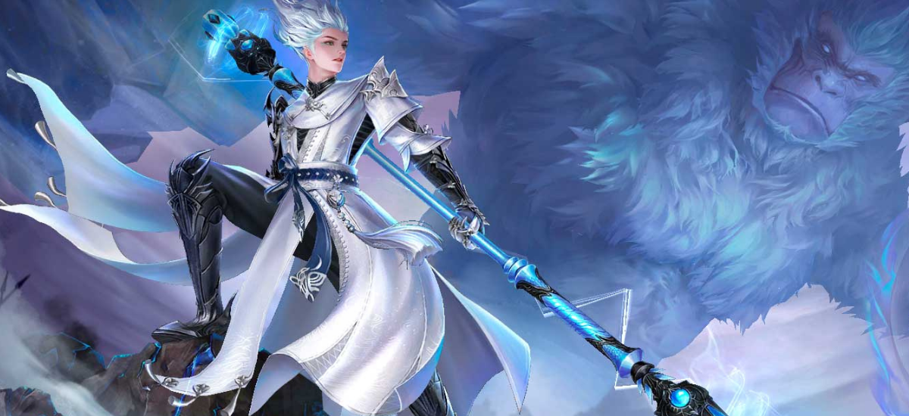

MONGE MACACO: O ANDARILHO
Os Selvagens são uma raça nascida na natureza e adaptável ao ambiente. Os Andarilhos são uma espécie menor de Selvagens. Comparados aos seus irmãos, há menos deles, mas são fisicamente mais fortes e ágeis. Durante os conflitos antigos, seus números foram muito reduzidos. O Senhor deles, Syzen, determinado a proteger o que restava de seu povo, transformou-os em humanos normais para viver com o resto do mundo. Com o passar do tempo, muitos mudaram, mas há um rumor entre os Andarilhos escondidos: o filho do antigo Senhor retornou. O nome dele é Syvos.
Sem dúvida um dos grandes destaques da classe é sua habilidade Forma de Macaco da Neve, que lhe permite se transformar em um macaco branco uivante, aumentando sua velocidade de movimento em 90%, além de reduzir a defesa física dos inimigos próximos por alguns segundos. Enquanto estiver com a transformação, os poderes fornecem o status Petrificação, que o torna imune a efeitos negativos enquanto estiver conjurando as habilidades!